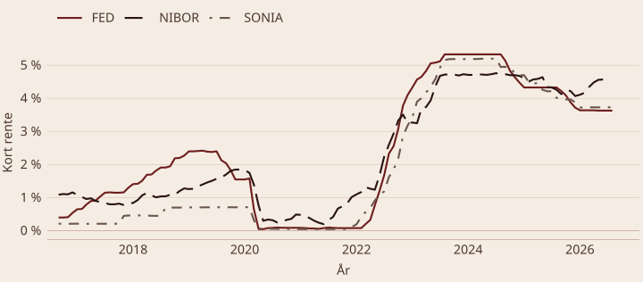
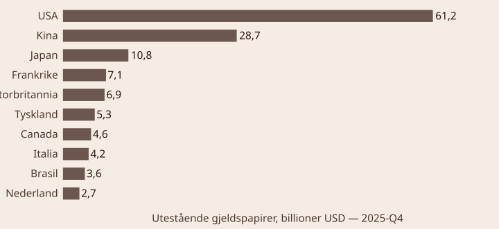
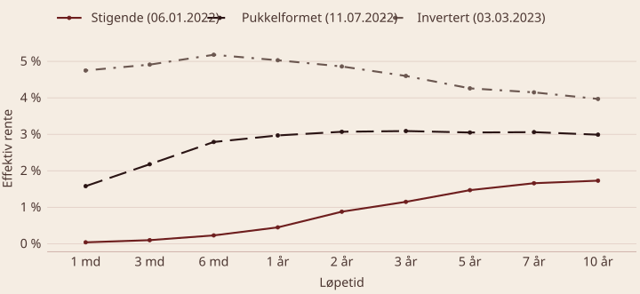
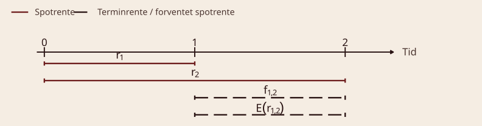
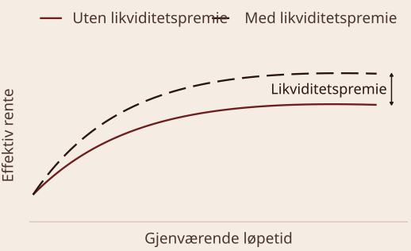
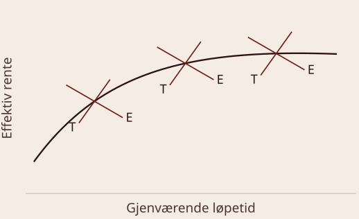

BED3 — Investering og finans · Forelesning 13
Norges Handelshøyskole
Time is man’s most precious possession.
— Seneca
Interest is to valuation what gravity is to matter.
— Warren Buffett
Anticipation is always at a discount.
— John Law
Interest is the price of anxiety.
— Ferdinando Galiani
Økonomiens motor — prisen på tid og risiko

Månedlige observasjoner av FED (effektiv Fed funds-rente), NIBOR (tre måneder) og SONIA. Vinduet er de siste ti årene og oppdateres når figuren bygges på nytt.
Kilde: Federal Reserve Bank of St. Louis (FRED), serie FEDFUNDS, IR3TIB01NOM156N og IUDSOIA.

Utestående gjeldspapirer utstedt av residenter, alle løpetider og valutaer, pålydende verdi. Pålydende og ikke markedsverdi fordi Kina bare rapporterer pålydende.
Kilde: Bank for International Settlements, Debt Securities Statistics.
Q1: Hva er de to hovedsegmentene i rentemarkedet? Pengemarkedet, med kortsiktig finansiering og løpetid under 12 måneder, og obligasjonsmarkedet, med langsiktig finansiering og løpetid over 12 måneder.
Q2: Hvorfor regnes renten som «prisen på tid»? Renten er prisen man betaler for tilgang til kapital i dag framfor i framtiden, og kompenserer långiveren for risiko, inflasjon og tapt alternativavkastning.
Q3: Hvilken rolle spiller rentemarkedet i økonomien? Det fordeler kapital mellom låntakere og investorer, styrer økonomisk aktivitet gjennom forbruk og sparing, og gir en indikator på framtidige økonomiske forventninger.
Verdien av lån, obligasjoner og sertifikater
Definisjon — pris på obligasjon Dagens pris, i prosent av pålydende eller pari beløp, avhenger av markedsrente, kupongrente og gjenværende løpetid. Prisen er summen av nåverdien av de framtidige kontantstrømmene.
P_0 = \sum_{t=1}^{T} \frac{C_t}{(1 + y)^t} + \frac{F}{(1 + y)^T}
Med et helt antall år til forfall er kupongdelen en annuitet:
P_0 = \frac{c \cdot F}{y}\left[1 - \frac{1}{(1 + y)^{T}}\right] + \frac{F}{(1 + y)^{T}} = c \cdot F \cdot A_{y,T} + \frac{F}{(1 + y)^{T}}
Prisen avhenger av antall dager til neste kupongforfall, så prisen må justeres i tiden mellom kupongutbetalingene:
\text{Kurs} = \text{Pris} - \text{Fradrag} \qquad \text{Fradrag} = \frac{365 - d}{365} \cdot c \cdot F
d er antall dager til neste kupongforfall.
Eksempel — du skal kjøpe en obligasjon
(1)\quad P_0 = \frac{10}{1{,}09} + \frac{10}{1{,}09^{2}} + \frac{110}{1{,}09^{3}} = 102{,}53
(2)\quad P_0 = \frac{10}{1{,}09^{1/2}} + \frac{10}{1{,}09^{3/2}} + \frac{110}{1{,}09^{5/2}} = 107{,}05 \qquad \text{Kurs} = 107{,}05 - \tfrac{1}{2} \cdot 10 = 102{,}05
P(y = 10\ \%) = \frac{8}{1{,}10} + \frac{8}{1{,}10^{2}} + \frac{108}{1{,}10^{3}} = 94{,}35
P(y = 6\ \%) = \frac{8}{1{,}06} + \frac{8}{1{,}06^{2}} + \frac{108}{1{,}06^{3}} = 105{,}90
Kupongrente 8\ \% og pålydende 100 NOK.
y = \left(1 + \frac{P_1 - P_0}{P_0}\right)^{365/d} - 1 \qquad P_0 = \frac{P_1}{(1 + y)^{d/365}}
Prisingsregler for statsveksel. P_t er prisen på tidspunkt t, og d er antall dager til forfall.
r = \underbrace{\left(\frac{P_1 - P_0}{P_0}\right)}_{\text{Perioderente}} \cdot \underbrace{\frac{365}{d}}_{\text{Annualisering}} \qquad P_0 = \frac{P_1}{1 + r \cdot \frac{d}{365}}
Prisingsregler for øvrige sertifikater, med enkel årsrente.
Eksempel — Equinor har utstedt et sertifikat Gjenværende løpetid 73 dager · pris 1 000 kr · ved forfall mottas 1 020 kr
Equinor er ikke staten, så her brukes enkel rente. For staten brukes effektiv rente. Med P_0 = 1\,000, P_1 = 1\,020 og d = 73 dager, altså 0{,}2 år:
r = \frac{1\,020 - 1\,000}{1\,000} \cdot \frac{365}{73} = 0{,}10 = 10\ \% \quad (\text{Equinor}) \qquad y = \left(1 + \frac{1\,020 - 1\,000}{1\,000}\right)^{365/73} - 1 = 0{,}1041 = 10{,}41\ \% \quad (\text{staten})
Q1: Hva er den viktigste forskjellen mellom prisingen av en obligasjon og et sertifikat? Obligasjoner inkluderer både kupongbetalinger og hovedstol, mens sertifikater ofte er nullkuponginstrumenter og prises som nåverdien av hovedstolen.
Q2: Hvordan påvirker en økning i markedsrenten prisen på en obligasjon? Prisen faller, fordi de faste kupongbetalingene blir mindre attraktive enn nye obligasjoner med høyere avkastning.
Q3: Kupongrente 8\ \%, løpetid 5 år, pålydende 1 000 NOK og markedsrente 6\ \%. Hvordan prises obligasjonen? Over pålydende, altså til premie, fordi kupongrenten på 8\ \% er høyere enn markedsrenten på 6\ \%.
Avkastning og løpetid

Effektiv rente for amerikanske statspapirer med løpetid fra 1 måned til 10 år. De tre datoene er valgt fordi de viser hver sin kurveform, og står fast når figuren oppdateres.
Kilde: Federal Reserve Bank of St. Louis (FRED), serien DGS1MO til DGS10.

r_1 er spotrenten fra t=0 til t=1, r_2 spotrenten fra t=0 til t=2, f_{1,2} terminrenten fra t=1 til t=2, og \mathbf{E}(r_{1,2}) forventet spotrente om ett år.
f_{t-1,t} = \frac{(1 + r_{t})^{t}}{(1 + r_{t-1})^{t-1}} - 1 \qquad\Longrightarrow\qquad f_{1,2} = \mathbf{E}(r_{1,2})
Under forventningshypotesen er terminrenten et forventningsrett anslag på den framtidige spotrenten.
Eksempel — Bernanke (2006) “The ten-year Treasury yield, for example, can be viewed as a weighted average of the current one-year rate and nine one-year forward rates, with the weights depending on the coupon yield of the security.”
Kilde: Ben S. Bernanke, «Reflections on the Yield Curve and Monetary Policy», tale for Economic Club of New York, 20. mars 2006, avsnittet «The Recent Behavior of Longer-Term Yields».
Eksempel — beregning av terminrenter Anta at r_1 = 6{,}5\ \% og r_2 = 7\ \%.
Vi kjenner spotrenten fra t = 0 til t = 1, r_1 = 6{,}5\ \%, og spotrenten fra t = 0 til t = 2, r_2 = 7\ \%. Spørsmålet er hva forventet spotrente fra t = 1 til t = 2 er.
f_{t-1,t} = \frac{(1 + r_{t})^{t}}{(1 + r_{t-1})^{t-1}} - 1 = \mathbf{E}(r_{t-1,t})
\text{a)}\quad (1 + r_1)(1 + f_{1,2}) = (1 + r_2)^{2} \;\Longrightarrow\; f_{1,2} = \frac{(1 + r_2)^{2}}{1 + r_1} - 1 = \frac{1{,}07^{2}}{1{,}065} - 1 = 7{,}50\ \%
\text{b)}\quad \text{Strategi 1: } 1\,000\,000 \cdot 1{,}07^{2} = 1\,144\,900 \qquad \text{Strategi 2: } 1\,000\,000 \cdot 1{,}065 \cdot 1{,}075 = 1\,144\,900
c) Egne forventninger til økonomien påvirker strategien. Tror du på sterkere vekst enn markedet om ett år, kan strategi 2 være best, siden høyere framtidige renter gir bedre avkastning. Tror du på svakere økonomi, lønner strategi 1 seg, siden du låser inn en høyere toårsrente i dag.
d) Kupongobligasjon med T = 2 og c = 10:
P_0 = \frac{10}{1{,}065} + \frac{110}{1{,}07^{2}} = 105{,}468 \qquad 105{,}468 = \frac{10}{1 + y} + \frac{110}{(1 + y)^{2}} \;\Longrightarrow\; y = 6{,}98\ \%


T er tilbud og E er etterspørsel i hvert segment.
Q1: Hva beskriver rentens terminstruktur? Sammenhengen mellom rentenivå og løpetid på gjeldsinstrumenter, visualisert som en rentekurve.
Q2: Hva er de tre typene rentekurver, og hva signaliserer de? Stigende, den normale: forventet vekst og høyere inflasjon. Flat: usikkerhet eller overgangsperiode. Invertert: forventet nedgang eller resesjon.
Q3: Hvordan forklarer forventningshypotesen terminstrukturen? Framtidige rentesatser speiler markedets forventninger om framtidige spotrenter, og lange og korte papirer er perfekte substitutter.
Q4: Hva er likviditetspremien, og hvordan påvirker den rentekurven? Kompensasjonen investorer krever for å låne ut kapital på lang sikt. Den øker med løpetiden, og gir en stigende rentekurve selv når spotrentene er konstante.
Q5: Hva sier markedssegmenteringshypotesen om tilbud og etterspørsel? Rentesatsene i hvert segment bestemmes uavhengig av de andre segmentene, ut fra tilbud og etterspørsel i det aktuelle løpetidssegmentet.
Q6: Hva er en praktisk implikasjon av å forstå terminstrukturen? Den hjelper investorer med å anslå framtidige rentenivåer, vurdere risiko og velge strategi ut fra forventet økonomisk utvikling.
Hvordan identifisere og kvantifisere
Definisjon — durasjon Durasjon måler hvor følsom markedsverdien er for en endring i rentenivået, altså den deriverte av prisen med hensyn på renten.
D = \frac{1}{P_0} \sum_{t=1}^{T} t \cdot \frac{CF_t}{(1 + y)^{t}} = \frac{1}{P_0}\left[1 \cdot \frac{c \cdot F}{(1 + y)^{1}} + \cdots + T \cdot \frac{c \cdot F + F}{(1 + y)^{T}}\right]
Durasjonen øker med
Durasjonen kan tolkes som kapitalens effektive bindingstid: et vektet gjennomsnitt av kontantstrømmenes gjenværende løpetid, der vektene er markedsverdien av betalingene. Den kalles også Macaulay-durasjon.
Definisjon — modifisert durasjon D^{*} Måler hvor mye prisen på en obligasjon endres i prosent for hvert prosentpoeng renten endres.
D^{*} = \frac{-D}{1 + y}
\frac{\Delta P}{P} = \underbrace{\frac{-D}{1 + y}}_{\text{Modifisert durasjon}} \cdot \underbrace{\Delta y}_{\text{Renteendring}} = D^{*} \cdot \Delta y
\Delta P = P_1 - P_0 \;\Longrightarrow\; \frac{\Delta P}{P} = \frac{P_1 - P_0}{P_0} = D^{*} \Delta y \;\Longrightarrow\; P_1 = P_0 \cdot (1 + D^{*} \cdot \Delta y)
Endring i pris ved en liten endring i renten:
P_0 = \frac{CF_1}{(1 + y)^{1}} + \frac{CF_2}{(1 + y)^{2}} + \cdots + \frac{CF_n}{(1 + y)^{n}}
\frac{dP_0}{dy} = \frac{-1 \cdot CF_1}{(1 + y)^{2}} + \frac{-2 \cdot CF_2}{(1 + y)^{3}} + \cdots + \frac{-n \cdot CF_n}{(1 + y)^{n+1}}
\frac{dP_0}{dy} = \frac{-1}{1 + y} \cdot \left[\frac{1 \cdot CF_1}{(1 + y)^{1}} + \frac{2 \cdot CF_2}{(1 + y)^{2}} + \cdots + \frac{n \cdot CF_n}{(1 + y)^{n}}\right]
Den relative kursendringen får vi ved å dele på P_0, og da står durasjonen igjen som en egen faktor:
\frac{dP_0}{P_0} \cdot \frac{1}{dy} = \underbrace{\frac{-1}{1 + y} \cdot \underbrace{\left[\frac{1 \cdot CF_1}{(1 + y)^{1}} + \frac{2 \cdot CF_2}{(1 + y)^{2}} + \cdots + \frac{n \cdot CF_n}{(1 + y)^{n}}\right] \cdot \frac{1}{P_0}}_{\text{Durasjon}}}_{\text{Modifisert durasjon}}
Eksempel — beregn durasjon og approksimert prisendring
P_0 = \frac{10}{1{,}0698} + \frac{110}{1{,}0698^{2}} = 105{,}468 \qquad D = \frac{1}{105{,}468}\left[1 \cdot \frac{10}{1{,}0698} + 2 \cdot \frac{110}{1{,}0698^{2}}\right] = 1{,}91 \qquad D^{*} = -\frac{1{,}91}{1{,}0698} = 1{,}785
\Delta y = +1\ \%:\quad P_1 = 105{,}468 \cdot (1 - 1{,}785 \cdot 0{,}01) = 103{,}59 \qquad \text{Faktisk: } \frac{10}{1{,}0798} + \frac{110}{1{,}0798^{2}} = 103{,}60
\Delta y = -1\ \%:\quad P_1 = 105{,}468 \cdot (1 + 1{,}785 \cdot 0{,}01) = 107{,}35 \qquad \text{Faktisk: } \frac{10}{1{,}0598} + \frac{110}{1{,}0598^{2}} = 107{,}37
Ved bruk av modifisert durasjon overvurderes prisfallet ved renteoppgang (103{,}59 < 103{,}60) og undervurderes prisøkningen ved rentenedgang (107{,}35 < 107{,}37).
Eksempel — markedsverdi og avkastning etter ett år
Obligasjonsdetaljer
Oppgaver
a) Pålydende beløp investert:
\text{Pålydende} = \frac{3\,000\,000}{105{,}468} \cdot 100 = \frac{3\,000\,000}{1{,}05468} = 2\,844\,465
b) Markedsverdi etter ett år, med pris P = \dfrac{110}{1{,}074} = 102{,}42:
\frac{102{,}42}{100} \cdot 2\,844\,465 \approx 2\,913\,325
c) Oppnådd avkastning det første året:
\text{Avkastning} = \frac{10 + (102{,}42 - 105{,}468)}{105{,}468} \approx 6{,}59\ \%
Q1: Hva er durasjon, og hvordan tolkes den? Durasjon er den vektede gjennomsnittlige tiden til kontantstrømmene fra en obligasjon. Den måler renterisiko ved å vise hvor følsom prisen er for renteendringer.
Q2: Hvorfor er modifisert durasjon bare en tilnærming, og når fungerer den best? Den er en lineær tilnærming, mens forholdet mellom pris og rente er konvekst. Den fungerer best ved små renteendringer.
Q3: Hva er forskjellen mellom renterisiko og reinvesteringsrisiko? Renterisiko er risikoen for at renteendringer påvirker verdien av obligasjoner. Reinvesteringsrisiko er risikoen for at framtidige kontantstrømmer må reinvesteres til lavere renter.
Hvordan beskytte seg mot renterisiko
Definisjon — immunisering Å låse inn en fast rente over en forhåndsdefinert tidsperiode, eller tilsvarende: å sikre en minste framtidig verdi for en gitt tidshorisont. Målet er at porteføljens verdi på horisonten er den samme uansett renteendringer, ved å balansere verdien av eiendeler og forpliktelser over tid.
Hva betyr kontantstrømsmatching?
Hvorfor det er viktig
Eksempel — problemstillingen Du ønsker å kjøpe en leilighet for 5 MNOK om 10 år, og vil investere i dag slik at beløpet er tilgjengelig uansett renteendringer. Renten er y = 10\ \%.
Oppgaver
D_1 = 11{,}09
D_3 = 10{,}00
Obligasjonen med 20 års løpetid har en durasjon som matcher tiden fram til leilighetskjøpet. Vi investerer derfor i den.
Anta ingen renteendringer. For å bekrefte at vi har 5 MNOK om ti år ved investering i obligasjon 3, må vi finne verdien av kupongutbetalingene om ti år gitt en rente på 10\ \%, og salgsverdien av obligasjonen om ti år. Begge deler krever obligasjonens pålydende verdi når vi investerer 1,928 MNOK, og den avhenger av prisen i dag.
P_0^{3} = \frac{7}{0{,}10}\left(1 - 1{,}10^{-20}\right) + \frac{100}{1{,}10^{20}} = 74{,}459
74{,}459 \cdot x = 1\,928\,000 \;\Longrightarrow\; x = \frac{1\,928\,000}{74{,}459} = 25\,889{,}4156 \qquad 25\,889{,}4156 \cdot 100 = 2\,588\,941{,}56
En pris på 74,459 betyr at kjøp i dag gir rett til 100 om 20 år, i tillegg til kupongutbetalingene. x er antall obligasjoner, og pålydende beløp er x \cdot 100.
En investering på 1,928 MNOK i dag tilsvarer en pålydende verdi på 2,589 MNOK, som er grunnlaget for kupongutbetalingene. Vi beregner så framtidsverdien av kupongene og salgsverdien av obligasjonen om ti år.
\text{Framtidsverdi kuponger:}\quad 2{,}589 \cdot 0{,}07 \cdot \frac{1{,}10^{10} - 1}{0{,}10} = 2{,}888
\text{Pris om ti år:}\quad P_{10}^{3} = \frac{7}{0{,}10}\left(1 - 1{,}10^{-10}\right) + \frac{100}{1{,}10^{10}} = 81{,}566 \;\Longrightarrow\; \text{CF fra salg} = \frac{2{,}589}{100} \cdot 81{,}566 = 2{,}112
\text{Totalt} = 2{,}888 + 2{,}112 = 5
Ved beregning av obligasjonsprisen er N = 10 brukt, siden det gjenstår ti år til forfall. Alle beløp i MNOK.
Anta at renten faller til 9\ \% rett etter at vi har investert.
\text{Framtidsverdi kuponger:}\quad 2{,}589 \cdot 0{,}07 \cdot \frac{1{,}09^{10} - 1}{0{,}09} = 2{,}753
\text{Pris om ti år:}\quad P_{10}^{3} = \frac{7}{0{,}09}\left(1 - 1{,}09^{-10}\right) + \frac{100}{1{,}09^{10}} = 87{,}165 \;\Longrightarrow\; \text{CF fra salg} = \frac{2{,}589}{100} \cdot 87{,}165 = 2{,}257
\text{Totalt} = 2{,}753 + 2{,}257 = 5{,}01
Alle beløp i MNOK.
Anta at renten stiger til 11\ \% rett etter at vi har investert.
\text{Framtidsverdi kuponger:}\quad 2{,}589 \cdot 0{,}07 \cdot \frac{1{,}11^{10} - 1}{0{,}11} = 3{,}031
\text{Pris om ti år:}\quad P_{10}^{3} = \frac{7}{0{,}11}\left(1 - 1{,}11^{-10}\right) + \frac{100}{1{,}11^{10}} = 76{,}443 \;\Longrightarrow\; \text{CF fra salg} = \frac{2{,}589}{100} \cdot 76{,}443 = 1{,}979
\text{Totalt} = 3{,}031 + 1{,}979 = 5{,}01
Alle beløp i MNOK.
Q1: Hva er hovedmålet med immunisering i rentemarkedet? Å beskytte en portefølje mot renterisiko ved å matche durasjonen mellom eiendeler og forpliktelser.
Q2: Hva er forskjellen mellom durasjonsmatching og kontantstrømsmatching? Durasjonsmatching matcher porteføljens gjennomsnittlige bindingstid med forpliktelsens tidshorisont. Kontantstrømsmatching sikrer at innkommende kontantstrømmer dekker forpliktelsene eksakt på forfallstidspunktet.
Q3: Hvorfor kan en immunisert portefølje trenge rebalansering? Fordi durasjonen på eiendelene og forpliktelsene endrer seg når tiden går, og fordi renteendringer påvirker verdien og sammensetningen av porteføljen.
Om rentemarkedet
Prising av rentepapirer
Rentens terminstruktur
Risiko og immunisering